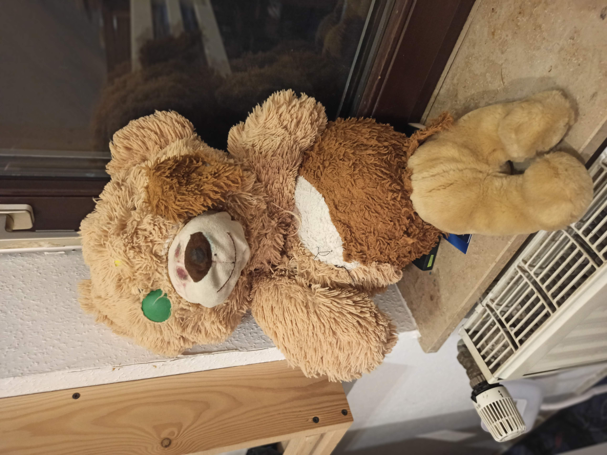
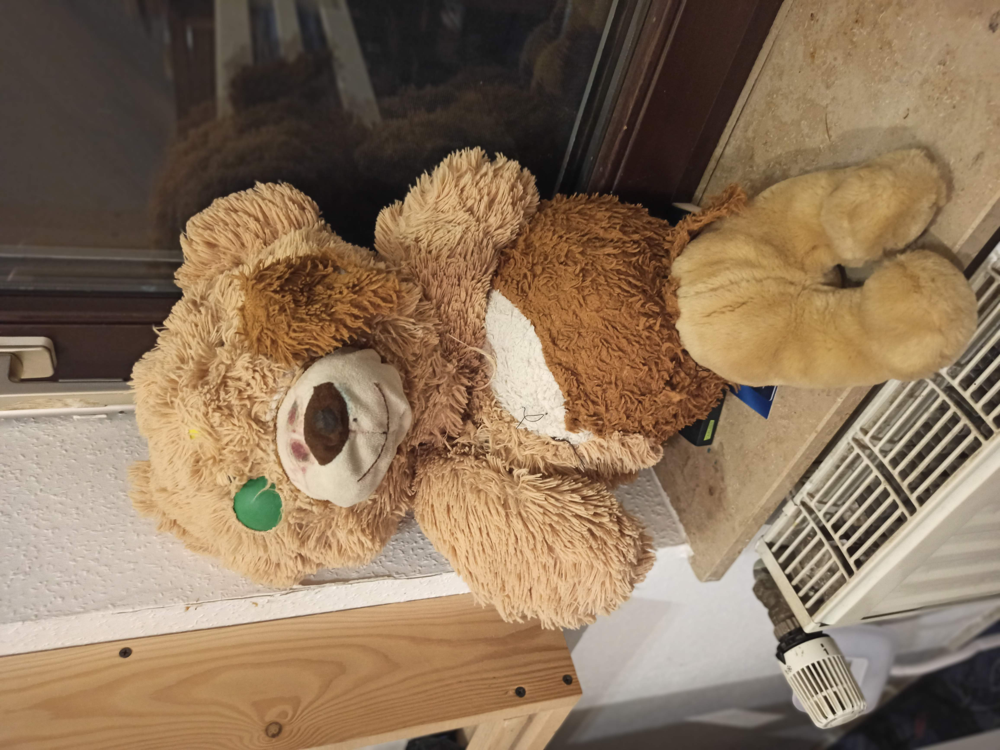

12.03.2022

In diesem Teddy wurden einst Spinneneiger gelagert, nun Balledbadbelle. Doch plötzlich verschwand der Überrest.
In diesem Teddy wurden einst Spinneneiger gelagert, nun Balledbadbelle. Doch plötzlich verschwand der Überrest.
 

Ein makaberes Wiedersehen! Jimmys Überreste tauchen nach Monaten wieder auf, versteckt vor Meister Emils neugierigen Augen. Was für ein grausames Spiel! Warum sollte man das vor ihm verstecken?
Nachdem Jimmys Überreste wieder aufgetaucht sind, beginnt eine Phase der Heilung und des Neubeginns. Aus den gefundenen Stoffresten, einst Zeugen düsterer Ereignisse, entsteht ein neues Leben. Innerhalb eines Tages hat Meister Emil alles fix zusammengenäht.


In der Mülltonne wurde ein aufregender Fund gemacht. Vor einer Woche war der Eisbär noch bei Anton, heute ist er bereits Emils Messer zum Opfer gefallen. Meister Emils Tante hatte den Eisbären Anton gegeben mit der dringenden Bitte, dass er niemals in Emil's Hände gelangt. Nun hat Jimmy wenigstens neue Beine und ist mit Watte gefüllt. Er hat sogar Augen bekommen.
Tragödie! Jimmys verliert ein Auge. Tränen und Verzweiflung prägen die Szenerie.
Anton schlägt erneut zu! Jimmy wird bei einem brutalen Angriff übel zugerichtet. Blut und Chaos regieren.

Langsam, aber sicher kämpft sich Jimmy zurück ins Leben.
Der Albtraum ist vorbei! Jimmy ist vollständig genesen und bereit für neue Abenteuer. Neue Augen symbolisieren die Hoffnung auf Genesung.
Ein eisiger Schock! Jimmy verbringt eine Nacht in Anton's Iglo und kehrt als Eiszeitmonster zurück. Doch der Schock verfliegt schnell und neue Augen und die Schleife bringen neuen Glanz in sein Leben.

Ein schrecklicher Unfall! Jimmy wird erneut schwer verletzt. Blut und Tränen fließen erneut.
Rache ist süß! Um Jimmy zu retten, opfert sein Besitzer wertvolle Teddys von Berger. Neue Organe und ein bezauberndes Lächeln lassen Jimmys süße Seite hervortreten. Zu süß.
Respekt durch Einschüchterung! Mit einem furchteinflößenden Aussehen will Jimmy seinen Status festigen. Raawrr!
Ein kleiner Ausrutscher mit dem Messer hat fatale Folgen. Hasenohren zieren nun Jimmys Kopf.
Oops! Jimmys Gesicht fällt versehentlich zum Opfer eines missglückten Eingriffs. Panik und Chaos im Teddyland.
Neues Gesicht, neuer Schwung! Mit einem makellosen neuem Gesicht startet Jimmy in ein neues Kapitel.
Größer, stärker, besser! Um seine Macht zu demonstrieren, plant Jimmy eine spektakuläre Vergrößerung. Teddyleichen werden zu seinem Thron umgewandelt.
Mission erfüllt! Nach mühsamer Arbeit ist Jimmys monströses Fell fertiggestellt. Er steht nun majestätisch über seinen Untertanen.
Der letzte Schliff! Mit einer Schleife und neuen Augen perfektioniert Jimmy seinen neuen Look.
Ein neues Opfer wurde für Schnuckie gemacht. Er lebte immerhin 13 Tage.
Jimmys Arme erstrahlen in neuem Glanz, während seine Beine weiterhin leiden. Um seine Bewunderung für Queen Bee zu zeigen, schlüpft er in ein Bienen-Kostüm.
Die ersten Worte! Jimmy lernt sprechen und begeistert seine Umgebung mit seinen neuen Fähigkeiten.
Ein verführerisches Lächeln ziert Jimmys Gesicht. Seine Augen funkeln geheimnisvoll.
Selbst sein Mund erstrahlt nun in verführerischem Licht. Jimmys Transformation zum Monster ist aber noch nicht abgeschlossen.